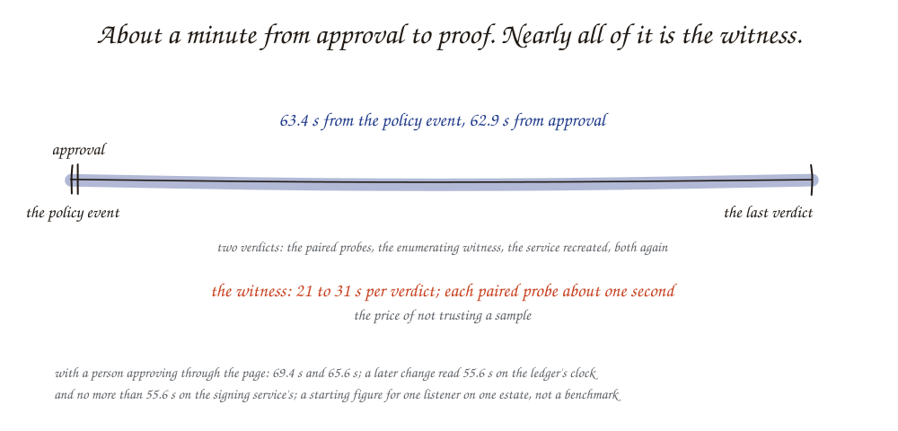

What is the CBOM workbench, and what has it shown so far?¶
The answer¶
cbom-workbench (its command is pqch) is a worked
example, in running code, of what a cryptographic inventory is for. It builds a cryptography bill of materials (CBOM) — a
structured list of every algorithm, key, certificate and protocol an
organization runs, with where each one was found — from three kinds of
evidence, and then uses that inventory to do the thing the inventory exists
for: change an algorithm across an estate and prove, by re-scanning, that the
change landed. Every finding, decision, approval and verification is an event
on an append-only, signed ledger, and the CBOM is rebuilt from that ledger.
Its first page draws NIST's crypto-agility plan (CSWP 39-upd1, Fig. 3) with
what the workbench does in each part: the CBOM is the plan's information
repository, between the tools that fill it and the engine that ranks what to
change (note 16). Its centre is the
plan the CBOM makes possible: what depends on what, what comes first, and in
what order the changes have to go
(note 17). The whole of it, with
its inference engines, runs on one desk-side machine from an offline bundle
(note 18),
and the CBOM can be asked questions whose answers cite ledger events, each
citation checked by a rule (/ask). A single server is read the same way,
below its operating system as well as on the wire, and planned from its own
CBOM (note 20).
It is an exploration shared freely, not a product. Its three arguments are that the inventory is the tool the migration is made from and checked against, not a report to file; that the place of a language model in that work is something to measure role by role, not assume; and that this work can run on hardware an organization holds, because a map of where its cryptography is weakest is not something to send elsewhere. It is being built now because federal policy requires the inventory now, and the minimum elements of a federal CBOM are not published until 2027-03-19 (note 03): a record built with its evidence can be projected into whatever is asked for later.
So far it has shown the path end to end on a small test estate: scan, inventory, score against an answer key, change policy, apply, verify on the wire — and, since 2026-10-19, the inventory half on an estate twice the size, with a database that still accepts RSA key transport, a broker, a legacy Java service, a post-quantum gateway and an internal certificate authority. The numbers are below, with what each one does and does not establish.
The concept: five rungs¶
Post-quantum migration means replacing the public-key algorithms a large quantum computer could break — RSA, elliptic-curve Diffie-Hellman, ECDSA — with the algorithms NIST standardized in 2024: ML-KEM (FIPS 203) for key establishment, and ML-DSA (FIPS 204) for signatures. Key establishment is urgent first, because traffic recorded today can be decrypted later once the key exchange is broken ("harvest now, decrypt later"). United States federal policy sets dates: OMB M-26-15 puts key establishment on prioritized systems in a phase ending 2030, and digital signatures in 2031.
An organization cannot migrate what it cannot see. The project is organized around a maturity ladder in which each rung is a question the organization can now answer:
| Rung | What the organization has | The question it can answer |
|---|---|---|
| Opaque | A hand-kept spreadsheet | None reliably |
| Enumerated | Scanner output | Where is quantum-vulnerable cryptography? |
| Structured | A CBOM with dependencies | What depends on it? |
| Managed | Owners, priorities, approvals | What first, what is blocked, what changed? |
| Agile | Change as routine | If policy changes, how fast can we respond, and did it land? |
Crypto agility — the top rung — is the ability to change an algorithm by changing policy, without re-engineering each system. The project treats it as something to measure: the time from a policy change to a verified result.
![A ladder of five rungs, bottom to top: Opaque, a hand-kept spreadsheet, answers nothing reliably; Enumerated, scanner output, answers where quantum-vulnerable cryptography is; Structured, a CBOM with dependencies, answers what depends on it; Managed, owners, priorities and approvals, answers what first, what is blocked and what changed; Agile, change as routine, answers how fast the organization can respond to a policy change and whether it landed, measured as the time from a policy change to a verified result.](../../img/sketches/00-five-rungs.svg)
The mechanism¶
Three ideas hold the design together.
Agents propose, verifiers dispose. Scanners, rules and, where interpretation is needed, a language model produce findings and proposed changes. Whether a change worked is never a model's judgement. It is decided by a verifier that re-scans: one client that offers only the new algorithm must succeed, and one that offers only the old ones must be refused. A listener that accepts both has the new algorithm enabled, not enforced, and that is recorded as its own state.
The ledger remembers. Every event is one line in an append-only file, each line carrying the hash of the one before it. Checkpoints over the file are signed with ML-DSA-65 by a separate signer service. The CBOM, the score and every screen are computed from the ledger and can be deleted and rebuilt.
Models earn their place by measurement. Six roles, a floor per role written before the run, every call repeated, fifteen arms across every model the lab holds: one role needs a 120B model, three run on a 31B model on four L4s (one of them with reasoning on), two went back to rules because no arm reached the floor (note 13). What each step up in models or hardware changes is a measured row or is marked not measured.
The parts, as built today:
| Part | What it does | Uses a model |
|---|---|---|
| Scope | A file listing the only addresses, ports and images that may be touched | No |
| Runner | The one container that holds the Docker socket; runs named scan profiles and approved changes, and refuses anything outside the scope | No |
| Scout | Runs testssl.sh (through PostgreSQL's TLS upgrade where the scope says so) and ssh-audit against listeners, cbomkit-theia and the harness's own reader of key material against images; normalizes their output to one finding format | No |
| Rules | Link a certificate seen on the wire to the file that holds its key; link a listener and its image to the service the scope names, on the runner's record of the container it found; judge whether a certificate in an image is served, leaving a certificate authority's alone; state each listener's posture; name the verifier that could confirm a change to each class of entry; settle each conflict between a file and the wire | No |
| Owner's facts | Mission function, data lifetime and high-value status per service, typed into one file and recorded as supplied links with a human actor; labelled supplied in the CBOM, never coverage | No |
| Managed rules | Read OMB M-26-15, carried as quotes the loader checks against the memo, to decide which algorithms are quantum-vulnerable, which systems are prioritized, which queue each system's key establishment and signatures wait in and by when, and whether TLS 1.3 is offered; record supplier and validated-module blockers from two dated snapshots | No |
| Watch | Records each scan's configuration manifest and what changed since the previous scan; sends only new findings and changed items to the model jobs | No |
| Investigator | Traces a wire finding to the configuration line that causes it, through three typed tools over the service's build files under step and token budgets; recorded as the model's claim with the engine, the settings and the time | Yes — the one role that needs the 120B |
| Scorer | Compares a CBOM with an answer key, by layer, beside two baselines | No |
| Migrator | Renders a central policy into a service's configuration and proposes the difference as a change | No |
| Verifier | Paired probes and a second witness; issues enforced, enabled-not-enforced, not-landed or inconclusive |
No, by rule |
| Signer | Signs ledger checkpoints; holds the key where nothing else can read it | No |
| Inference seam | One place that knows where a model lives; code asks for a tier or a role, never a model | Yes — the investigator's trace; a typed classification, used by no rule; a conflict explanation where a deployment binds the role (the lab does not) |
The estate at M1: eight services, scored¶
On 2026-10-19 the estate grew to eight services and nine listeners: the slice below, a PostgreSQL 18 records database reached through its TLS upgrade, a RabbitMQ 4 queue, a Tomcat 8.5 application on Java 8, a gateway with an ML-DSA-65 certificate and the hybrid group only, a client-certificate listener on the API, and an internal certificate authority that issued three of the certificates. The answer key holds 73 items; every wire claim was probed by hand before the key was committed. The scanners alone and the workbench, by layer:
| Layer | Keyed | Scanners alone | Workbench | What differs |
|---|---|---|---|---|
| Wire | 40 (2 out of reach) | 38, no false positive | 38, no false positive | nothing: the wire is the scanners' |
| Image | 20, 2 decoys | 14; both decoys flagged | 20; no decoy flagged | the harness's own file reader (an ML-DSA certificate and key, a PKCS#12 keystore, DSA and Ed25519 host keys) and the rules (two unserved certificates marked not in use, two CA certificates left alone) |
| Posture | 9 listeners | not stated | 9 of 9 | a rule over both layers |
The delta over the scanners is where the design said it would be: the host layer and the structure, not the wire. The one listener that accepts RSA key transport, the records database, is found only because its scan speaks PostgreSQL's upgrade and enumerates cipher suites; a plain TLS scan of its port reports nothing (lesson 29).
Worked example: the four-service slice¶
The test estate is a "mini-agency" in which every weakness is planted, so an answer key can say exactly what a perfect inventory holds. The first slice is four containers on an isolated network:
| Service | Listener | Planted posture |
|---|---|---|
| portal | TLS | Classical: X25519 and P-256 key exchange, RSA-2048 certificate |
| api | TLS | Mixed: the hybrid group X25519MLKEM768 offered, X25519 still accepted, ECDSA P-256 certificate |
| sftp-legacy | SSH | Classical and old: OpenSSH 6.6, key exchange down to 1024-bit Diffie-Hellman, a DSA host key |
| bastion | SSH | Mixed: OpenSSH 10.0, hybrid ML-KEM key exchange first, X25519 still accepted, classical host keys |
A hybrid group combines a classical exchange with a post-quantum one, so the session is safe if either holds.
The answer key holds 36 items: 22 on the wire and 10 in images that a good inventory should find, 2 decoys that look like findings and are not, 1 real item no scan can reach (what a service offers when it connects out), and 1 fact that can only be typed in. It was committed before any scanner code was written.
The full test estate is eight services, these four among them, with a key of
74 items (58 to find, 9 decoys, 2 out of reach, 5 supplied); the demo's
test agency page shows
each service and what was planted in it. The slice's key is kept, frozen, in
eval/answer-keys/mini-agency-m0.yaml, and the scores below are the slice's.
Enumerated and Structured. One scan, scored (measured 2026-10-03, xr7620, x86_64):
| Layer | CBOMkit's image scanner alone | All scanners, no harness | Workbench |
|---|---|---|---|
| Wire | 0 of 23 | 22 of 23 | 22 of 23 |
| Host (images) | 7 of 10, decoy flagged | 7 of 10, decoy flagged | 7 of 10, decoy not flagged |
| Listener posture | not stated | not stated | 4 of 4 |
The denominators count the unreachable item, so the wire layer cannot reach 23 of 23 by design. A targeted wire scan takes 27 to 46 s for a TLS listener and 2 to 3 s for an SSH one; an image scan takes 71 to 96 s.
Agile. The portal's key-exchange groups come from one policy file. Changing
that file from "classical" to "require hybrid" produces a proposed change with
its diff and the exact check that will count as verified. After approval the
runner applies it, and the verifier probes the listener, then probes it again
after the service is recreated. Measured on the same machine: 63.4 s from the
policy event to the last verdict, 62.9 s from approval, with the verdict
enforced both times. With a person approving through the page, 69.4 s and
65.6 s. Nearly all of that time is the second-witness scan, 21 to 31 s per
verdict; the paired probes take about one second each.

Each interval is reported twice: from the harness's own timestamps, and as an upper bound from the times a separate signing service puts inside its signatures — the last signature before the policy event to the first over the verdict (55.6 s and "no more than 55.6 s" on a later change). A change is shown as verified, with a time, only when the runner's own log of its jobs and applies bears the ledger out; the three changes above predate that log and are shown as unchecked.
Off the network. Everything above — the slice, the harness, the scanners — starts from an offline bundle: thirteen images (the whole mini-agency, the harness, three scanners, the registry) by digest, in a local registry on disk; 1.5 GB for both x86_64 and arm64, 756 MB for arm64 alone. With the bundle's images deleted first, it started in 8.7 s, every image came from the bundle, a live scan scored as above, and a policy change was applied and verified with the bundle's registry stopped. The rehearsal on a second host is done: on 2026-11-04 the arm64 bundle, a wheelhouse of 45 wheels and a git bundle of the tree, carried as one 771 MB archive, were installed on a second DGX Spark-class machine (a Dell Pro Max GB10) with no package index and no image pulled from outside; the bundle verified and started in 4.5 s and the live scan scored wire 38 of 40, host 20 of 20, posture 9 of 9, no false positives, in about 2.5 minutes (lesson 53, lesson 54). On the same box the kit reads the machine it runs on as a server, with a second runner of its own and its own signer (note 20). Ask the CBOM answers there on the fast tier with thinking off, every citation passing on 12 of 12 evaluation items at a median of 2.8 s a call (note 19, lesson 58). In the lab, Nemotron 3.5 Super VL through the gateway reaches both answer floors, 12 of 12 each at a median of 55 s, and the public demo shows its answers to the six examples, recorded and checked again when the site is built (lesson 63). The public demo carries the eight-beat stage the same way: the test agency only, replayed from its ledgers, the plan's narration recorded once, and the hardware named as the runs recorded it.
What follows¶
- At the first rung, a harness adds structure, not coverage. On this estate the workbench finds exactly what the scanners find. What it adds is the link from a wire finding to the file holding the key, the judgement that a certificate sitting in an image is not served, and a stated posture per listener. Anyone presenting this work should say so in those words.
- The baseline matters. Measured against CBOMkit alone, any tool that scans the network looks transformative, because CBOMkit does not scan networks. The honest bar is all the open-source scanners run together with no harness.
- Verification is where the value concentrates. An inventory can be approximately right and still be useful. A statement that a change landed cannot. Most of the engineering effort, and most of the defects found in review, were in the verifier and in who is allowed to write what.
- Time-to-change is a measurable property. About a minute on one service is a starting figure for one estate, not a benchmark.
- The tool is judged before the estate. An agency authorizes the workbench as a system of its own. Reviewed against those controls, its foundation holds and the three blockers are in the shell around it: roles and separation of duties, its own cryptography in a validated module, and TLS (note 21). What can change without changing the demo has: every deadline assessed from now on names the document that set it (M-26-15 or NIST IR 8547), a model-set fact in the CBOM names its model, the checkpoint algorithm is a setting, the scope carries who authorized it and until when, and TLS to the models, origin checks, file modes and a release signature are settings a deployment turns on.
- Every entry is tagged, and unknown is a count. Each CBOM entry carries its status under the pack that governs its service, compatible, not compatible, unknown or outside the pack, judged by a rule from the pack's own table; on the four-service slice, 2, 39, 1 and 5 under M-26-15. A gap in the evidence is a number of its own, never a pass; both packs, M-26-15 and the CNSA 2.0 FAQ, are read first-hand and quote-checked (note 22).
- A supplier's statement is evidence of its own grade. What signs a firmware, which modules a controller carries and whether the installed version has a route forward come from the supplier; the workbench records such a statement as reported evidence on its own ledger, joins it to a scanned server by model and firmware version, and shows the two side by side with every disagreement visible; it never becomes a finding (note 23).
- The plan is handed over as a register. One row per step, grouped into the buckets a later phase is scoped by from a versioned pack, with the system, interface, mission thread, owner, classification, vendor path and cost the owner supplied beside the priority, deadline and blockers the rules computed, and the entries each step moves by fingerprint; the cost column is the owner's numbers summed once per service, nothing estimated (note 24).
- What no tool could see is a queue, not a percentage. Each gap a scan leaves is an event with a stable id, its asset class, the reason and what fills it; a person closes one by citing evidence; coverage per class is counted from reached against reached plus open gaps (note 25).
- Measured against the phase most organisations start with. Ten asks of a discovery-and-planning phase, nine answered from the ledger on the mini-agency's scan of 2026-11-09 (313 components, 183 not compatible, 10 gaps, 25 steps in three buckets) and one, the proof in a commercial consumer, named and waiting (note 26).
Scope¶
What this note's numbers cover: the four-service slice for the change path (one changed listener) and the eight-service estate for coverage — TLS, TLS behind PostgreSQL's upgrade, and SSH; wire and image evidence — on an x86_64 lab server, with the slice also run as arm64 under emulation. The code layer is not yet scanned on either. A separate set of targets measured what each scanner can see beyond the slice — databases and brokers over TLS, a client-certificate listener, an ML-DSA certificate (note 15).
Which model each of the pipeline's six roles needs is measured, on every model the lab holds (note 13): tracing a wire finding to its configuration line needs a 120B model; drafting a change plan, reading a call site and classifying an algorithm run on a 31B model on four L4s, the call-site read with reasoning on; naming a tool's spelling and resolving a conflict between layers go back to rules. A successor to the 120B, measured in the same slot, did not displace it; the same model's reasoning setting moved its result more than the change of model did.
Since 2026-10-20 the inventory is Structured: every listener on the eight-service estate has a complete dependency chain — listener, certificate, service, mission function, data lifetime — with each discovered link resting on named ledger events and each supplied link labelled (note 06); 188 of its 220 entries are recorded as having no verifier; its three file-versus-wire conflicts are settled by rule; and the investigator traced one finding per listener to its configuration line, eight of nine agreeing with the key and the ninth correcting it.
Since the same evening it is Managed: OMB M-26-15 is carried as data, each
rule in the memo's own words, and the assessor places each service's key
establishment and signatures in the memo's queues with their dates — 14 items
open, 2 met, 7 blocked on a supplier whose software cannot offer
post-quantum cryptography, none yet in a validated module — and shows a
decision record per item (note 07).
Watch mode records what changed between scans and re-examines only that.
Since 2026-10-21 the CBOM itself is on its own page: the document's makeup,
any entry field by field with the standard's fields and the project's told
apart and each traced to its ledger event, what a model was given from the
entry and what it answered, the CBOM against the previous scan's, and a
second projection of the same ledger rebuilt in milliseconds with no scan
(note 01). And a model now drafts the change for
software the harness has no renderer for, from the CBOM's entries and the
trace; the draft is rehearsed on a copy of the service before anyone can
approve it, and a verifier with a fourth, TLS 1.2 probe decides whether it
holds (note 16). The first, for the records
database, was rehearsed enforced and waits for approval. The
one model job tried for the rung, a plain-words explanation of each item's
queue, fell below its floor and is not used.
What is not yet built or measured: the code layer (no source scanner runs yet, so the key's code-layer decoy is untested); client-side posture; the full twelve-service estate; the bundle loaded on a second host with the network cut.
Where trust stops today: approvals are written by the harness process on the strength of a sign-on at the front door, not signed by the approver. The ledger's timestamps are the harness's clock, bracketed within two seconds by the signing service's; a verdict is re-derived from the runner's own log and raw output before it is shown as verified. What neither covers is how long a person's decision waited before the harness recorded it. The limits are stated on the page.
The mini-agency is the only estate the workbench changes; a network of one's own can be scanned and planned, never changed (the guide). This is a personal research project, not a Dell product, reference architecture or supported offering.
References¶
BRIEF.mdin the repository — the claim, the facts table with provenance for every number above, and the alternatives rejected.agency/answer-key.yaml— the 36 keyed items and the matching rules.docs/fable-review/M0-review.md,M0A-review.md— what was attacked, what held and what broke.- OMB M-26-15, Execution of the Migration to Post-Quantum Cryptography — the phases and dates.
- FIPS 203 (ML-KEM), FIPS 204 (ML-DSA) — the algorithms.
- OWASP CycloneDX, Authoritative Guide to CBOM — the CBOM format the inventory is written in (version 1.6).
- Related notes: what federal policy requires, and by when; what "verified" means; what an auditable record contains; what the open-source scanners cover; what a federal authorization asks of the tool itself.